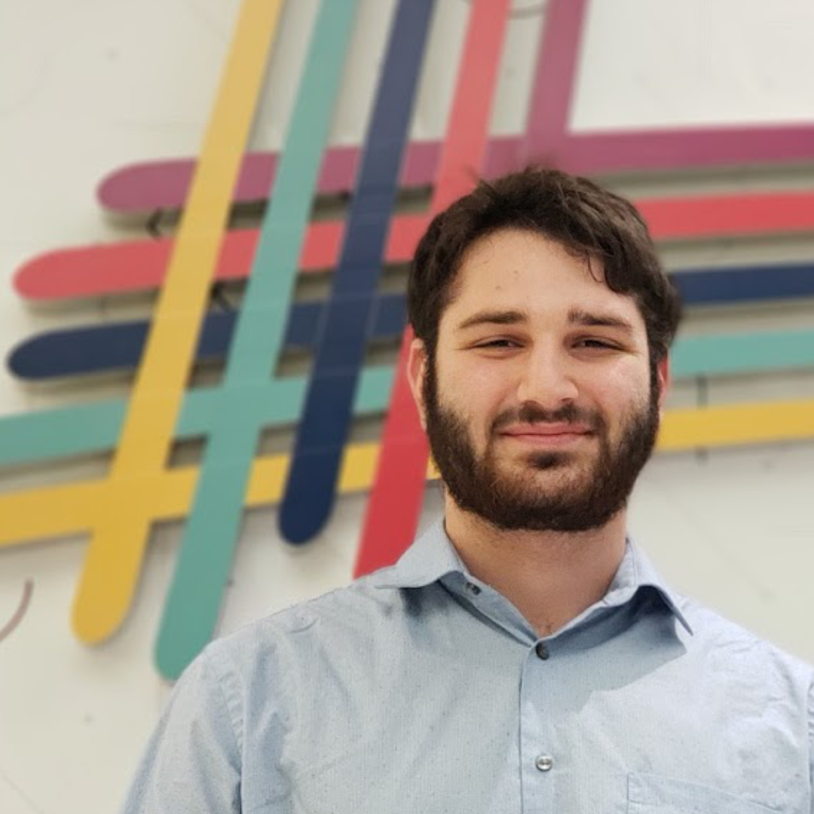

Software Engineering student with 4+ years in software development and project management as
demonstrated through work, leadership and personal experience. Professional, entrepreneurial and a
leader with qualifications that demonstrate creativity and ownership. Able to bring diverse
experience
in finance, administration and professional communication to any team.
- Name: Allen Kaplan
- Age: 20 Years
- Experience: 4 Years
- Languages: Java, MATLAB, RISC-V, C, Verilog, BASH, HTML and CSS
- Tools: Git, Maven, Gradle, CircleCI, JUnit, Docker, Spring and Intellij
- Country: Canada
- Location: Toronto, ON
- Personal e-mail: allenkaplan07 (at) gmail (dot) com
- Education e-mail: allenkap (at) my (dot) yorku (dot) ca
Education
Bachelor of Engineering - Software, York University
September 2017 - June 2022
Bergeron Entrepreurs in Science & Technology Certificate
- Integrates multidisciplinary courses in technology, law and business into creative problem-solving and innovation.
- Fellow of the BEST-Technion - Israel Institute of Technology intensive 1-month intensive entrepreneurship program.
Work Experience
Engineering Co-op, AFA Systems Ltd.
September 2019 - December 2020
- Developed feature for company intranet in PHP for production line workers to send images of jobs to AFA System’s internal CMS.
- Implemented Bluetooth Low Energy beacon system to direct the receiving team to the stock locations within the internal CMS.
- Implemented automated package tracking through integrating courier APIs into a Java application that stored responses to SQL
- Created invoice scanning and storing program to store incoming invoices from emails through Java, SQL and OCR technology.
Research Assisntant, Lassonde School of Engineering, York University
Summer 2020
- Developed 1st and 2nd year course content for engineering design courses (ENG 1101, ENG 1102, ENG 1500, ENG 2001)
- Worked to create a framework for large scale design sprints for innovation and technological disruption based in a 12 step design thinking process
- Engaged new students through a design sprint prior to orientation week for new students to learn about entrepreurship through the design sprint model
President, Lassonde Engineering Society
May 2019 - April 2020
- Managed 40-person team of 7 executives and 20+ directors to represent 1600+ engineering undergraduate students.
- Organized the successful referendum and implementation of a $1/credit fee ($50 000 total) through a massive campaign to students. Implemented club and technical funding policy. Created an endowment fund for long-term income stability.
Projects
Radio Reader
August 2019 - September 2019
- Built with Golang in August 2019 to add microservices communicating through gRPC and concurrency.
- Used cron jobs to perform HTTP GET requests to web player’s API which stored responses to a SQL database
- Developed analytics dashboard of the most played songs, most played artists and new songs this week.
Developer, TalkBox - an Assitive Speech Device
Year
Developed by a team of three people, the assistive speech device named TalkBox supports individuals who
are unable to speak. With the Natural Language Generation Java Library, the TalkBox allows the user to
select various nouns, verbs and pronouns to generate sentences that are then read with text-to-speech.
Fictional Card Shop
Year
On a team of 4 people, I worked as the project manager and systems desicner to create an e-commerce
solution. The Masadora Card Shop was based on the fictional card shop based on the book and show "Hunter
x Hunter". System was created through Java Tomcat with an MVC framework and SQL database.
Open Source Contributor, Go-Micro
October 2019 - January 2020
- Provided contributions to Go-Micro, an open-source framework for microservice development in Golang.
- Made specific changes to the “micro new” feature to improve working with dependency
- Worked to improve the “micro api” functionality for building web platforms by adding options for the json codec.
Awards
- International Engineering Commerce Case Competition - 1st Place Completed two 6-hour cases and one 12-hour cases in 4 days in a competition of 16 universities from around the world. Provided solutions for Internet of Things with technical specifications of cloud infrastructure and deployment.
- York Engineering Competition, Consulting - 1st Place
- BEST Startup Weekend - 2nd Place
- HackNYU, Education Track - Wolfram Alpha Award Created a web application to support youth in finding clubs that support accessibility needs; React, Node and MySQL.
Hobbies & Interests
- Biking Zoom Zoom
- Technology Entrepreneurship $$$$$
- Politics & Philosophy big thonks ü§î